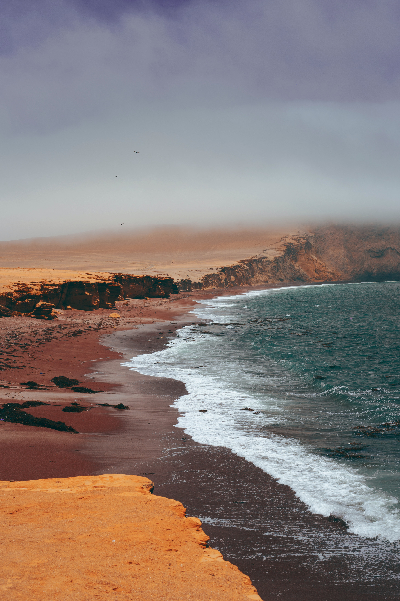
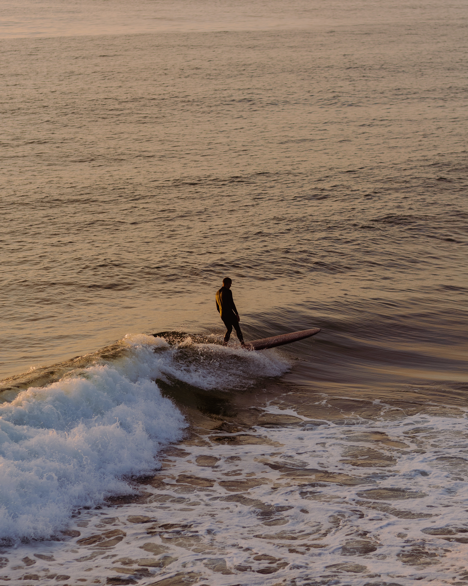

A SCIT é um grupo de amigos de Santa Catarina que foi fundada em 2017, conta com 16 membros atualmente,
Aqueles que são parte da familia SCIT tem como bonus, camaradas, cerveja, pizza e churrasco aos fins de semana, também conta com o suporte em certas areas da faculdade como Ciencias da Computação, Direito e Odontologia.
A inscrição premium ao grupo confere acesso ao Discord privado do grupo que conta com amigos para jogar LoL, Forza Horizon 5, Roblox, CSGO e muitos outros jogos, também vem incluido 4 anos de memes postados no General.
Entre hoje para o nosso grupo SCIT
”早上好中国
现在我有冰激淋 我很喜欢冰激淋
但是《速度与激情9》比冰激淋……” - John Xina
Icone e Logotipo SCIT

uma bela praia

um bom surfista